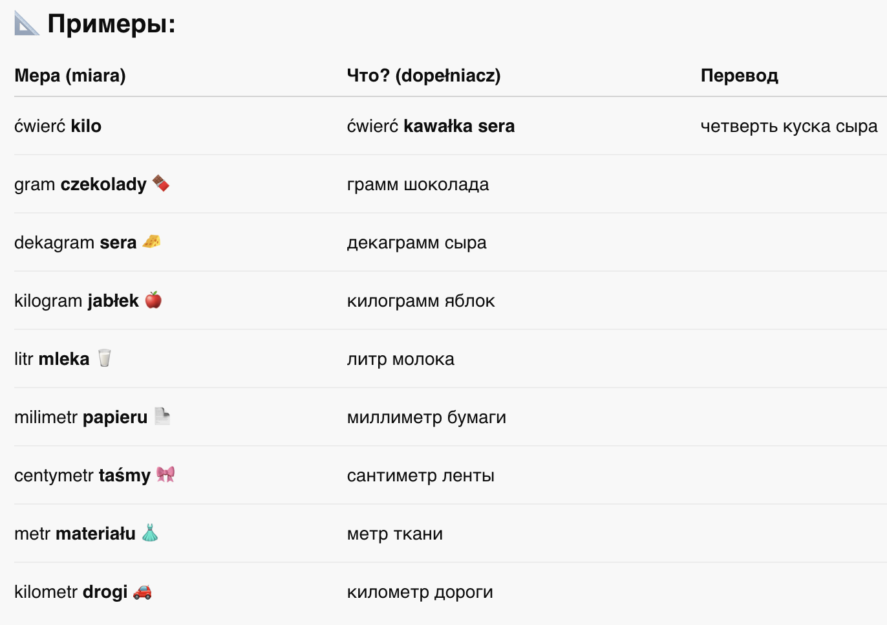
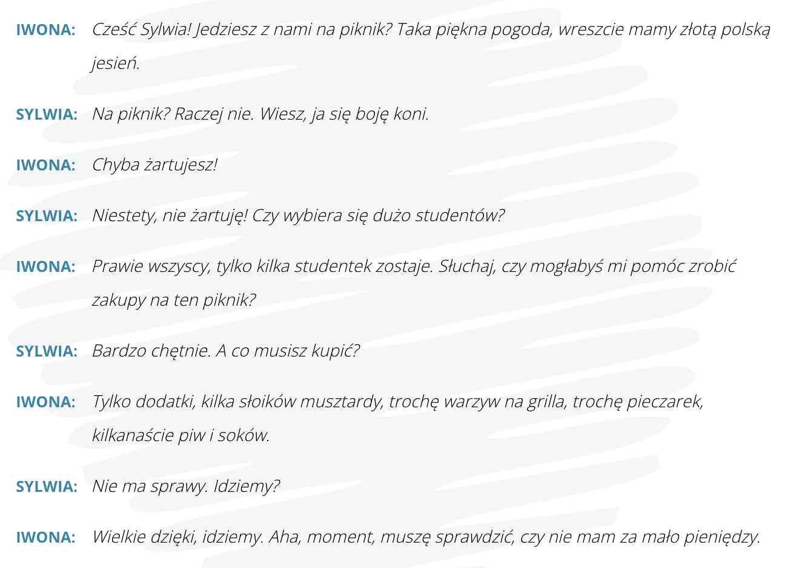
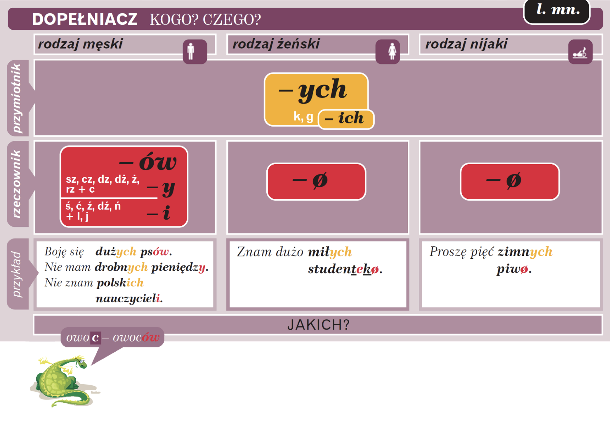
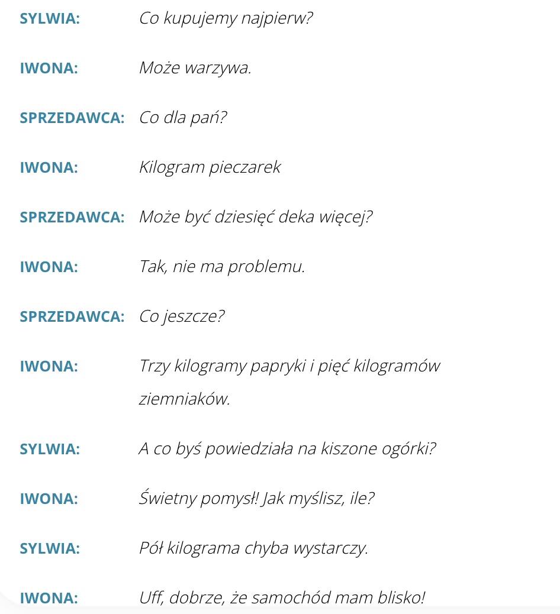
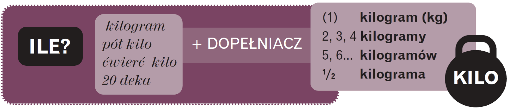
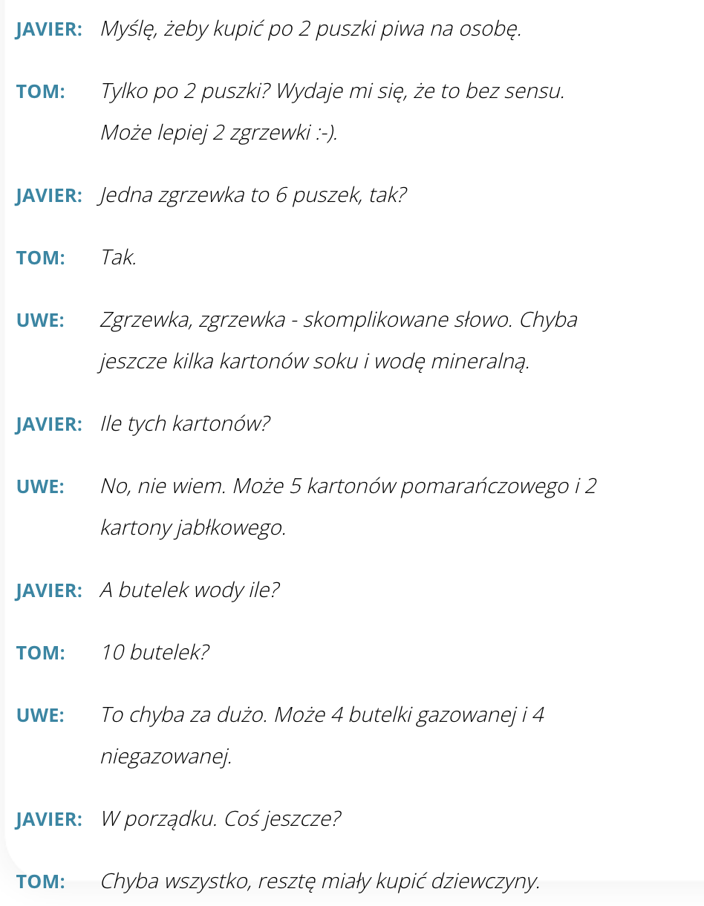
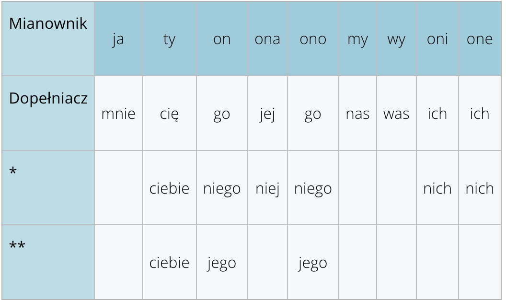
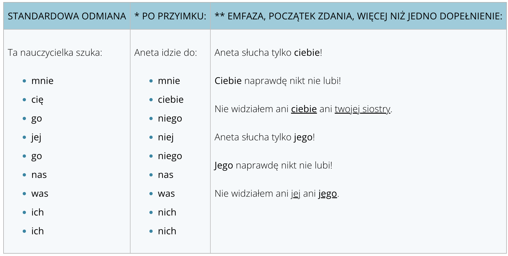

Krok Po Kroku 1
Temat 16 - Co ma być, to będzie.
A. Parasol noś i przy pogodzie
B. Miesiąc styczeń - czas życzeń
C. Dzieci najmilsze gdy śpią
D. W dzień świętego Andrzeja pannom z wróżby nadzieja
A. Parasol noś i przy pogodzie
słownistwo - A. Parasol noś i przy pogodzie
Dialog 1

PORY ROKU
Na pytanie kiedy? zwykle odpowiadamy używając narzędnika bez przyimka, ale czasem pojawia się też inna forma:

📌 PRZYSŁÓWEK – Наречие
Это неизменяемая часть речи, которая отвечает на вопросы:
jak?, kiedy? gdzie?
ile?

🛠️ Как образуются наречия?

В польском языке наречия (przysłówek) часто образуются от прилагательных и могут иметь различные окончания:
-
-o:
Например, "wysoko" (высоко) от "wysoki" (высокий), "tanio" (дёшево) от "tani" (дешёвый).
-
-io:
Например, "biegle" (свободно/бегло) от "biegły" (беглый).
-
-e:
Например, "pięknie" (красиво) от "piękny" (красивый).
-
-ie:
ładny → ładnie, piękny → pięknie
Dialog 2

POGODA

- Uwe:Mam dobrą wiadomość! Weekend będzie fantastyczny! Zimno: mróz około dziesięciu stopni Celsjusza poniżej zera, ale będzie świecić słońce, i - Javier - specjalnie dla ciebie będzie padać śnieg ! W Argentynie tego nie macie, prawda? Możemy pojechać do Zakopanego.
- Javier:O, serio? W gazecie pisali, że zero słońca: będzie pochmurno, zero śniegu: będzie padać deszcz, no i rano mgła jak w Londynie. Fantastycznie?
- ANGELA: Jest szansa, że będzie OK. W radiu mówili, że temperatura idzie do góry: będzie ciepło, ale niestety będzie wiać silny wiatr, no i wieczorem może być burza. Jesienią czy zimą to nietypowa pogoda.
- MAMI:Nic nie rozumiem. W telewizji pan mówił, że będzie chłodno, około zera stopni, może padać grad, ale krótko, no i jak zwykle będzie niskie ciśnienie.
- ANGELA:Ciśnienie? W Anglii nigdy nie słyszałam tego słowa..
- MAMI: Ja też nie. Ale pan Maj ma barometr i codziennie rano ogląda, jakie jest ciśnienie. A potem mówi, że jest zmęczony, nie chce iść do pracy i ma migrenę, bo ciśnienie jest za niskie.
- Javier::O tak, świetnie rozumiem. Też tak często mam, ale teraz już wiem dlaczego!
Na pytanie: Jaka jest dziś pogoda? odpowiadamy zwykle przy użyciu przysłówka:
- jast ładna
- jest brzydko
- jest słoneczne
- jest zimno
lub:
- jest ładna pogoda
- jest brzydka pogoda. (nie mówimy:
Jest zła pogoda.) - jest za bardzo zimno. (nie mówimy:
jest dużo zimno.)
🧩 Pogoda – ćwiczenie
| Kategoria | Odpowiedzi |
|---|---|
| 💧 Pada (padać) | deszcz, śnieg, burza |
| 🌡️ Jest (być) | ciepło, chłodno, mgła, pochmurno, mróz, niskie ciśnienie |
| ☀️ Świeci (świecić) | słońce |
| 🌬️ Wieje (wiać) | wiatr |
⛅ Dodatkowe wyrażenia
| Polski | Перевод |
|---|---|
| Niebo jest bezchmurne. | Небо безоблачное. |
| Niebo jest zachmurzone. | Небо затянуто облаками. |
| Będzie padać. | Будет дождь. |
| Ma być słonecznie. | Ожидается солнечно. |
| Zbliża się burza. | Приближается гроза. |
| Warunki pogodowe są trudne. | Погодные условия сложные. |
| Pogoda jest zmienna. | Погода переменчивая. |
🔄 Narzecza (наречия)
| Polski | Перевод |
|---|---|
| często | часто |
| rzadko | редко |
| zawsze | всегда |
| czasami | иногда |
| bardzo | очень |
| trochę | немного |
Opisowanie pogody
- Jutro w Małopolsce będzie piękna pogoda. Dużo słońca, bez deszczu. W nocy możliwe burze.
- W Warszawie na termometrach temperatura poniżej zera. Uwaga kierowcy: intensywne opady śniegu.
- W całej Polsce pochmurno, ale ciepło. Rano możliwe mgły.
- W Tatrach silny wiatr. W ciągu dnia będzie świecić słońce, ale w nocy zimno. Niestety, ciśnienie niskie i cały czas spada.
B. Zakupy na piknik
słownistwo - B. Zakupy na piknik =>
⚖️ MIARY (МЕРЫ) + DOPEŁNIACZ (родительный падеж)
Все слова меры в польском языке требуют dopełniacza — то есть "чего?"

Dialog 2

📚 DOPEŁNIACZ LICZBY MNOGIEJ
(родительный падеж во множественном числе)

Dialog3


⚖️ Jednostki miary w języku polskim
(Единицы измерения в польском языке)

Dialog 4


C. Poczta
słownistwo - C. Poczta
Dalog 5

🔤 ZAIMKI OSOBOWE W BIERNIKU – Личные местоимения в винительном падеже
В польском языке местоимения в винительном падеже (kogo? co?) могут иметь несколько форм — короткие и длинные.
🟢 1. Стандартные формы (используются чаще всего):


📌 Примеры:
- Lubię cię. – Я тебя люблю.
- Widzę go. – Я его вижу.
- Zapraszam was na koncert. – Приглашаю вас на концерт.
🟡 2. После предлога — используются особые формы:

🔴 3. Длинные формы – Ciebie, Jego, Nią…


D. Zaimki
słownistwo - D. Zaimki
Czy pomożesz mi?
🟡 PROŚBA O POMOC (Просьба о помощи)
Фразы, с помощью которых можно вежливо попросить о помощи:
-
1. Мог бы ты мне помочь? -
Czy mógłbyś mi pomóc?
-
2. Можешь мне помочь? -
Czy możesz mi pomóc?
-
3. Не будете ли вы так любезны и…? -
Czy byłby pan tak uprzejmy i…?
-
4. Я хотел попросить тебя о помощи. -
Chciałem cię prosić o pomoc
-
5. У меня к тебе просьба, можешь…? -
Mam do ciebie prośbę, czy możesz…
-
6. Поможешь мне? -
Czy pomożesz mi?
-
7. Не могла бы мне помочь, пани? -
Czy mogłaby mi pani pomóc?
🟢 REAKCJA POZYTYWNA (Положительная реакция)
Фразы, с которыми вы соглашаетесь помочь:
-
1. Нет проблем. -
Nie ma sprawy/problemu.
-
2. Да, конечно. -
Tak, oczywiście.
-
3. С удовольствием. -
Z przyjemnością.
-
4. Почему бы и нет? -
Dlaczego nie?
-
5. С радостью. -
Chętnie.
🔴 REAKCJA NEGATYWNA (Отказ/Отрицательная реакция)
Фразы, если вы не можете помочь:
-
1. К сожалению, у меня нет времени. -
Niestety, nie mam czasu.
-
2. Мне жаль, но нет. -
Przykro mi, ale nie.
-
3. Извините, но я очень занят. -
Przepraszam, ale jestem bardzo zajęty.
Zaimki osobowe w dopełniaczu.

Zaimki osobowe ty, on, ona, ono, oni, one w dopełniaczu mają więcej niż jedną formę.
